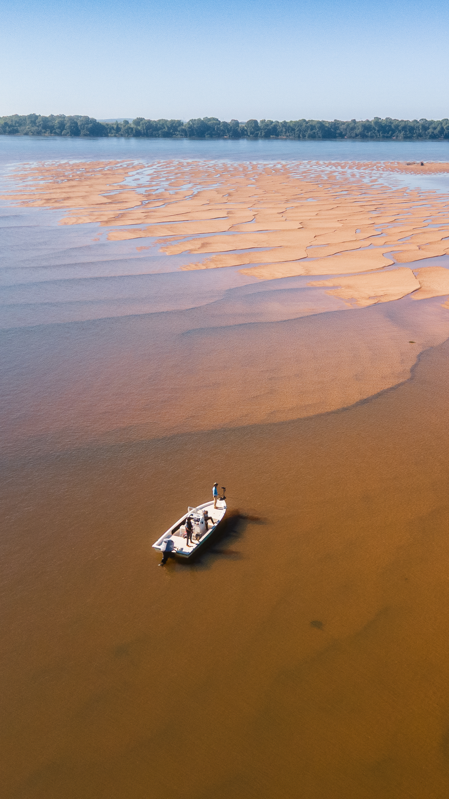

Volver a proyectos
Bahamas
Exuma Lodge
Un refugio costero diseñado para maximizar ventilación cruzada, sombra profunda y relación directa con el paisaje marino.
La propuesta se implanta con una lógica de bajo impacto sobre el terreno, elevando los espacios habitables y priorizando materiales durables frente al ambiente salino.
La arquitectura organiza las áreas comunes y privadas alrededor de patios de aire y recorridos exteriores cubiertos, sosteniendo confort térmico con mínima dependencia mecánica.